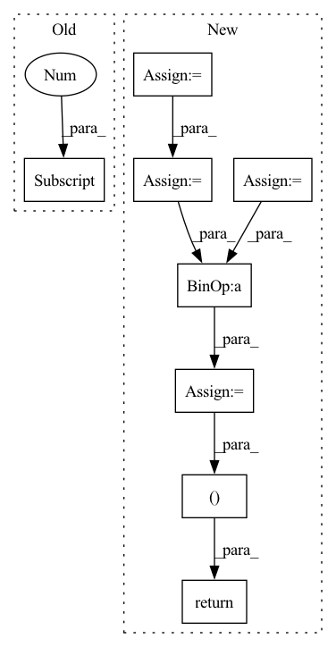

Pattern ID :2314
Before Change
edge_weights = torch.ones(edge_index.size(1), dtype=torch.int,
device=edge_index.device)
else:
edge_weights = np.ones(edge_index.shape[1] , dtype=np.int)
degree = weighted_degree(index, edge_weights, num_nodes=num_nodes)
return edge_index, edge_weights / degree[index]
After Change
if backend is torch_sparse:
assert edge_weights is None
deg = edge_index.sum(dim=dim).to(torch.float)
deg_inv = deg.pow(-1.0)
deg_inv[deg_inv == float("inf")] = 0
edge_index = deg_inv.view(-1, 1) * edge_index
return edge_index, None
index = edge_index[dim]
degree = weighted_degree(index, edge_weights, num_nodes=num_nodes)
return edge_index, edge_weights / degree[index]In pattern: SUPERPATTERN
Frequency: 4
Non-data size: 8
Instances Fragment ID: 9867189
Project Name: torchspatiotemporal/tsl
Commit Name: f28e5a2fddc34eeb90a13c113512c8ab12b6138b
Time: 2022-07-20
Author: ivan.marisca@hotmail.it
File Name: tsl/ops/connectivity.py
M Class Name: AnonimousClass
N Class Name: AnonimousClass
M Method Name: normalize(4)
N Method Name: normalize(4)
M Parent Class:
N Parent Class:
M File Name: tsl/ops/connectivity.py
N File Name: tsl/ops/connectivity.py
M Start Line: 181
M End Line: 187
N Start Line: 215
N End Line: 225
Before Change
edge_weights = torch.ones(edge_index.size(1), dtype=torch.int,
device=edge_index.device)
else:
edge_weights = np.ones(edge_index.shape[1] , dtype=np.int)
degree = weighted_degree(index, edge_weights, num_nodes=num_nodes)
return edge_index, edge_weights / degree[index]
After Change
if backend is torch_sparse:
assert edge_weights is None
deg = edge_index.sum(dim=dim).to(torch.float)
deg_inv = deg.pow(-1.0)
deg_inv[deg_inv == float("inf")] = 0
edge_index = deg_inv.view(-1, 1) * edge_index
return edge_index, None
index = edge_index[dim]
degree = weighted_degree(index, edge_weights, num_nodes=num_nodes)
return edge_index, edge_weights / degree[index] Fragment ID: 9867186
Project Name: torchspatiotemporal/tsl
Commit Name: 50089afdf23de12eb6d11e9d5e7e64d949d45611
Time: 2022-08-18
Author: ivan.marisca@hotmail.it
File Name: tsl/ops/connectivity.py
M Class Name: AnonimousClass
N Class Name: AnonimousClass
M Method Name: normalize(4)
N Method Name: normalize(4)
M Parent Class:
N Parent Class:
M File Name: tsl/ops/connectivity.py
N File Name: tsl/ops/connectivity.py
M Start Line: 181
M End Line: 187
N Start Line: 215
N End Line: 225
Before Change
@staticmethod
def backward(ctx, grad_output):
gamma = ctx.saved_tensors[0] .item()
grad_input = _discounted_cumsum_left_dispatcher(grad_output, gamma)
return grad_input, None
After Change
grad_input = _discounted_cumsum_left_dispatcher(grad_output, gamma)
grad_gamma = None
if output is not None:
z = _discounted_cumsum_right_dispatcher(output, gamma)
z = z[:, 1:]
dLdy = grad_output[:, :-1]
grad_gamma = (z * dLdy).sum(dim=1)
return grad_input, grad_gamma, None
def discounted_cumsum_left(input, gamma):
if not torch.is_tensor(gamma): Fragment ID: 9867184
Project Name: toshas/torch-discounted-cumsum
Commit Name: beef5a507ac68bf6811c9f59a0fd9200dd1ca451
Time: 2021-08-28
Author: anton.obukhov@gmail.com
File Name: torch_discounted_cumsum/discounted_cumsum.py
M Class Name: DiscountedCumSumRightFunction
N Class Name: DiscountedCumSumRightFunction
M Method Name: backward(2)
N Method Name: backward(2)
M Parent Class: torch.autograd.Function
N Parent Class: torch.autograd.Function
M File Name: torch_discounted_cumsum/discounted_cumsum.py
N File Name: torch_discounted_cumsum/discounted_cumsum.py
M Start Line: 89
M End Line: 91
N Start Line: 99
N End Line: 107
Before Change
@staticmethod
def backward(ctx, grad_output):
gamma = ctx.saved_tensors[0] .item()
grad_input = _discounted_cumsum_right_dispatcher(grad_output, gamma)
return grad_input, None
After Change
grad_input = _discounted_cumsum_right_dispatcher(grad_output, gamma)
grad_gamma = None
if output is not None:
z = _discounted_cumsum_left_dispatcher(output, gamma)
z = z[:, :-1]
dLdy = grad_output[:, 1:]
grad_gamma = (z * dLdy).sum(dim=1)
return grad_input, grad_gamma, None
class DiscountedCumSumRightFunction(torch.autograd.Function):
@staticmethod Fragment ID: 9867181
Project Name: toshas/torch-discounted-cumsum
Commit Name: beef5a507ac68bf6811c9f59a0fd9200dd1ca451
Time: 2021-08-28
Author: anton.obukhov@gmail.com
File Name: torch_discounted_cumsum/discounted_cumsum.py
M Class Name: DiscountedCumSumLeftFunction
N Class Name: DiscountedCumSumLeftFunction
M Method Name: backward(2)
N Method Name: backward(2)
M Parent Class: torch.autograd.Function
N Parent Class: torch.autograd.Function
M File Name: torch_discounted_cumsum/discounted_cumsum.py
N File Name: torch_discounted_cumsum/discounted_cumsum.py
M Start Line: 75
M End Line: 77
N Start Line: 79
N End Line: 87